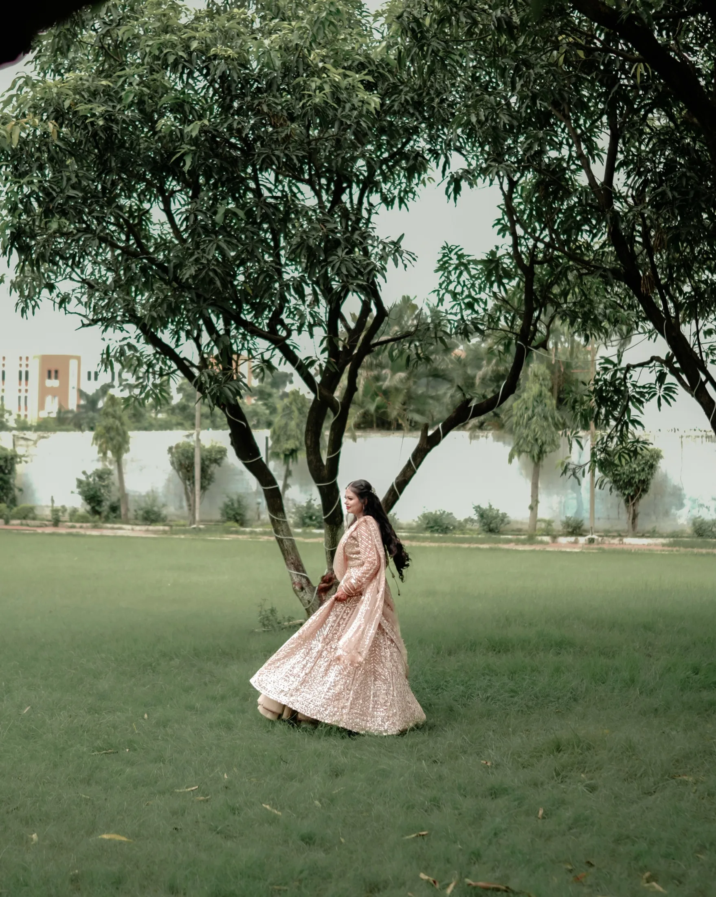
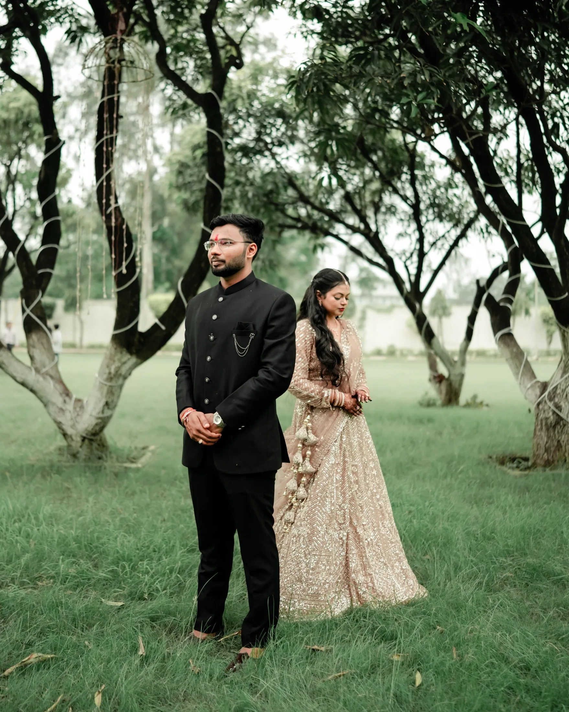

2026–27 BOOKINGS OPEN
SCROLL TO EXPLORE ↓
EST. IN STORIES, NOT POSES
500+ weddings.
Still chasing the next story.
We photograph the loud celebrations, the quiet glances, and everything that happens in between — so years later, it still feels like you were there.
SELECTED STORIES
01 — 06MOTION / 001
Not just how it looked.
How it felt.
BEHIND THE CAMERA
Photographing people,
not performances.
MJ Royal approaches weddings as lived stories rather than staged sets — watching for the gestures, pauses and chaos that make each celebration unmistakably yours.

500+WEDDINGS
PHOTOGRAPHED
PHOTOGRAPHED
8+YEARS
OF STORIES
OF STORIES
2026–27BOOKINGS
NOW OPEN
NOW OPEN
BASED IN CHHATTISGARH · AVAILABLE FOR DESTINATIONS
RAIPUR · BEMETARA · BILASPUR · BEYOND
YOUR STORY COULD BE NEXT.